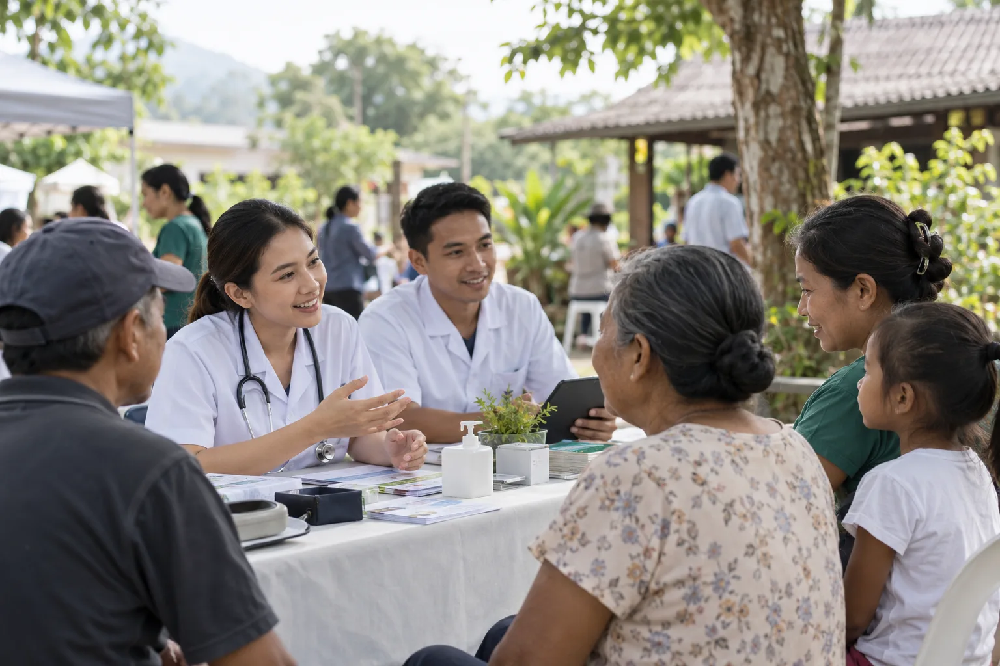
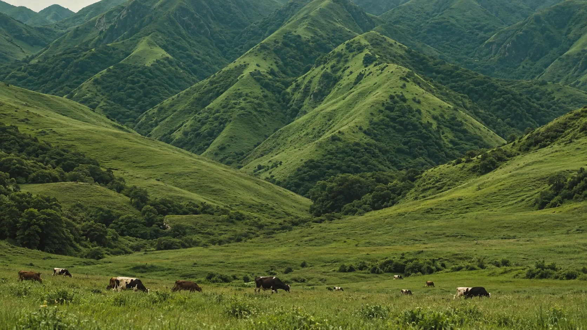
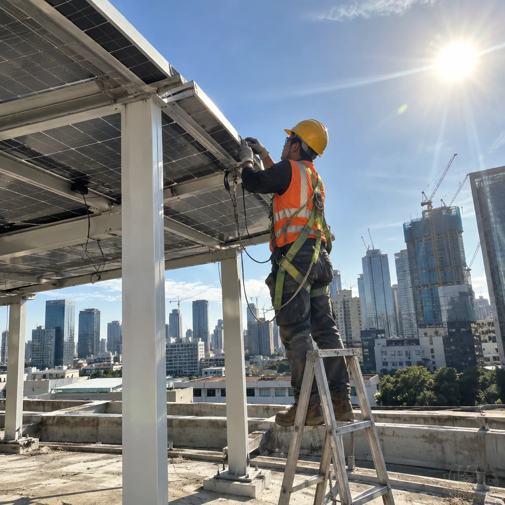
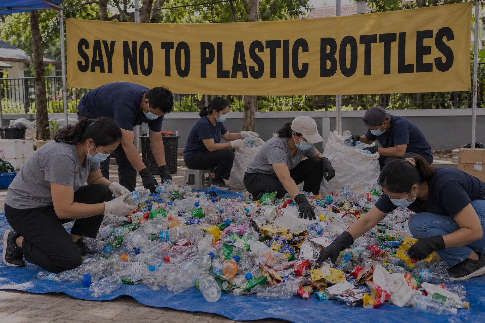
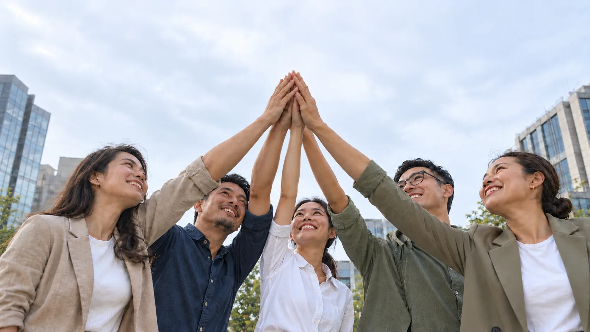

MYLIVE 2025
为马来亚大学医学中心员工提供赞助。
FY2026 报告 · 示意图
自 FY2018 起，按马来西亚交易所标准报告。本网站数据均取自已公布的可持续发展声明。

可持续发展不仅关乎我们衡量什么，也关乎我们回馈什么。
衡量成果 →
PCCS 自 FY2018 起持续发布可持续发展报告。 网站数据均取自已公布的可持续发展声明。
Bursa Malaysia 报告标准PCCS 自 FY2018 起，按照 Bursa Malaysia 标准进行可持续发展报告。所有数据均经过审计，而非停留在愿景层面。

可持续发展不仅关乎我们衡量什么，也关乎我们回馈什么——回馈那些让我们能够开展工作的社区。